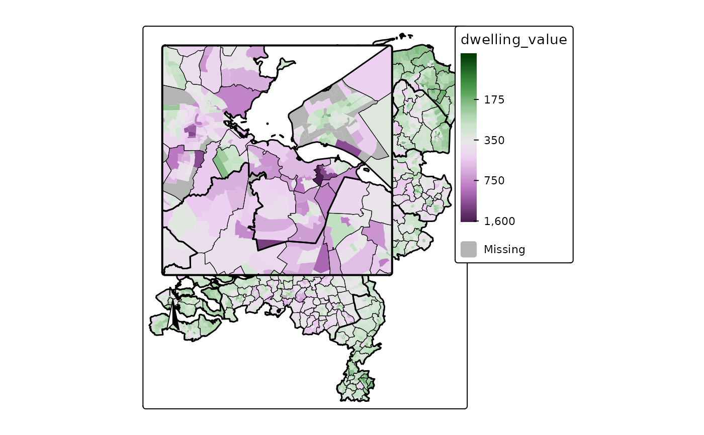
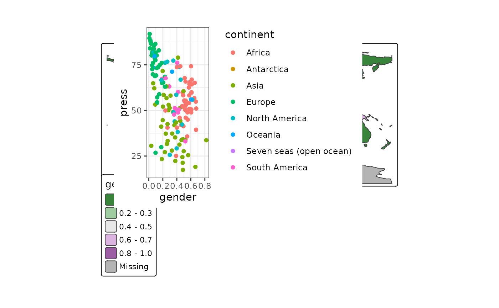

Map component that adds an inset object, e.g. a mini map
Usage
tm_inset(
x = NULL,
height,
width,
margins,
between_margin,
position,
group_id,
frame,
frame.color,
frame.alpha,
frame.lwd,
frame.r,
z
)Arguments
- x
object to draw. Can be: bounding box, tmap object, ggplot2 object, grob object, image file name.
- height
height of the component in number of text line heights.
- width
width of the component in number of text line heights.
- margins
margins
- between_margin
Margin between
- position
The position specification of the component: an object created with
tm_pos_in()ortm_pos_out(). Or, as a shortcut, a vector of two values, specifying the x and y coordinates. The first is"left","center"or"right"(or upper case, meaning tighter to the map frame), the second"top","center"or"bottom". Numeric values are also supported, where 0, 0 means left bottom and 1, 1 right top. See also vignette about positioning. In case multiple components should be combined (stacked), usegroup_idand specifycomponentintm_comp_group().- group_id
Component group id name. All components (e.g. legends, titles, etc) with the same
group_idwill be grouped. The specifications of how they are placed (e.g. stacking, margins etc.) are determined intm_comp_group()where its argumentidshould correspond togroup_id.- frame
frame should a frame be drawn?
- frame.color
frame color
- frame.alpha
frame alpha transparancy
- frame.lwd
frame line width
- frame.r
Radius of the rounded frame corners. 0 means no rounding.
- z
z index, e.g. the place of the component relative to the other componets
Examples
## map
bb = tmaptools::bb(NLD_prov[NLD_prov$name == "Utrecht",], ext = 1.05)
bb_Randstad =
sf::st_bbox(c(xmin = 120000, xmax = 150000, ymin = 460000, ymax = 500000), crs = 28992)
tm_shape(NLD_dist) +
tm_polygons(
fill = "dwelling_value",
fill.scale = tm_scale_continuous_pseudo_log(values = "-cols4all.pu_gn_div"),
col = NULL) +
tm_shape(NLD_muni) +
tm_borders(col = "black", lwd = 0.5) +
tm_shape(NLD_prov) +
tm_borders(col = "black", lwd = 1.5) +
tm_inset(bb_Randstad, height = 12, width = 12, position = c("left", "top")) +
tm_compass(position = c("left", "top"), )

## ggplot2
if (requireNamespace("ggplot2")) {
library(ggplot2)
p = ggplot(World, aes(x = gender, y = press, colour = continent)) +
geom_point() +
theme_bw()
tm_shape(World) +
tm_polygons(
fill = "gender",
fill.scale = tm_scale(values = "-cols4all.pu_gn_div")) +
tm_inset(p, height = 15, width = 20, position = tm_pos_in("left", "bottom"))
}
#> Warning: Removed 20 rows containing missing values or values outside the scale range
#> (`geom_point()`).
